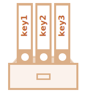

Объекты
Как мы знаем из главы Типы данных, в JavaScript существует 8 типов данных. Семь из них называются «примитивными», так как содержат только одно значение (будь то строка, число или что-то другое).
Объекты же используются для хранения коллекций различных значений и более сложных сущностей. В JavaScript объекты используются очень часто, это одна из основ языка. Поэтому мы должны понять их, прежде чем углубляться куда-либо ещё.
Объект может быть создан с помощью фигурных скобок {…} с необязательным списком свойств.
Свойство – это пара «ключ: значение», где ключ – это строка (также называемая «именем
свойства»), а значение может быть чем угодно.
Мы можем представить объект в виде ящика с подписанными папками. Каждый элемент данных хранится в своей папке, на которой написан ключ. По ключу папку легко найти, удалить или добавить в неё что-либо.
Пустой объект («пустой ящик») можно создать, используя один из двух вариантов синтаксиса:
let user = new Object(); // синтаксис "конструктор объекта"
let user = {}; // синтаксис "литерал объекта"Обычно используют вариант с фигурными скобками {...}. Такое объявление называют
литералом
объекта или литеральной нотацией.